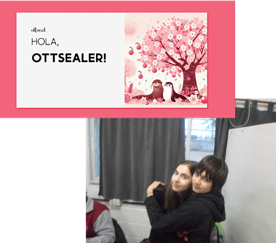

Ottseal es un foro creado por Pia González y Sara Moreno como parte de un proyecto escolar en secundaria, con el objetivo de construir una comunidad virtual donde las ideas y el conocimiento se compartan libremente. Diseñado para ser intuitivo y accesible, Ottseal permite a los usuarios registrarse fácilmente y comenzar a publicar sobre cualquier tema de su interés: desde tecnología y entretenimiento hasta temas de actualidad, debates y más.
El foro está organizado en categorías que ayudan a los usuarios a encontrar rápidamente los temas que les interesan, y cada post abre la puerta a discusiones abiertas, preguntas y respuestas de la comunidad. Ottseal fomenta el respeto y la inclusión, proporcionando un espacio seguro y positivo para compartir opiniones, hacer preguntas, y descubrir nuevas perspectivas. También cuenta con funciones para moderar y destacar contenido, asegurando una experiencia enriquecedora para todos los participantes. ¡Únete, crea tu perfil y comienza a explorar los temas que más te apasionan en Ottseal!